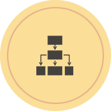
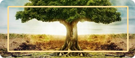
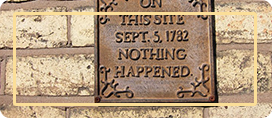

Марина Врубляускене
Психолог, коуч,
тренер, расстановщик
Автор и ведущая длительной психологической программы для женщин «Обретение себя»
- Опыт консультирования: с 2003 г.
- Ведение авторских групп: с 2004 г.
- Проведение расстановок: с 2012 г.
Чем я занимаюсь?
- Долгосрочное психотерапевтическое консультирование взрослых, направленное на разрешение внутриличностных конфликтов (работа с детскими травмами, сценариями, семейной историей)
- Психологическое сопровождение кардинальных жизненных изменений, личностных, семейных и возрастных кризисов
- Психологическая помощь в профессиональном самоопределении, самореализации, нахождении своего места в социуме
- Персональный коучинг (психологическое сопровождение в постановке и достижении конкретной цели)
- Ведение психотерапевтических групп, семинаров и тренингов
- Профориентация старшеклассников
Образование
- 2003-2005 гг. НОУ ДПО Институт Коучинга (психологическое консультирование в стиле коучинг)
- 2007-2008 гг. “Тренерская мастерская Ирины Шевцовой”
- 2007-2009 гг. Институт психотерапии и консультирования “Гармония” (подготовка и стажировка консультантов экстренной психологической помощи)
- 2008-2010 гг. Институт психотерапии и консультирования “Гармония” (Международная школа психотерапии, консультирования и ведения групп; совместно с Concord Instutute)
- 2013-2015 гг. «Неспешность и подлинность» - обучающий курс экзистенциальной психотерапии Ирины Млодик
- 2011-н.в. Центр современных системных расстановок Елены Веселаго
Направления работы
Трудности
в отношениях с людьми:
- С родителями (например, нарушение личных границ, перенос на вас ответственности за их жизнь, контроль, опека)
- С партнерами (например, несовпадение ожиданий, взглядов или целей, отсутствие эмоционального контакта)
- С детьми (например, при прохождении ими возрастных кризисов)
- С друзьями и коллегами (например, неумение сказать «нет»)
Трудности
в отношениях с собой с собой:
- Неустойчивая или заниженная самооценка
- Неумение выставлять и охранять свои границы
- Сложности с проживанием чувств: например, страха, тревоги, гнева, тоски
- Внутренние конфликты
Трудности в адаптации
к жизненным изменениям:
- Развод, утрата, болезнь, психологическая травма
- Брак, рождение ребенка, декретный отпуск
- Смена места жительства или рода деятельности
- Возрастные кризисы
Вопросы самореализации и
отношений с социумом:
- Поиск новой профессии или нового места работы
- Постановка долгосрочных целей и создание плана их реализации
- Поиск внутренних ресурсов для достижения цели
- Сложности в обращении с деньгами
Чем я могу помочь?
-
Первичная или разовая психологическая консультация
2500 ₽ очно и в skype -
Длительное психо-терапевтическое консультирование
2000 ₽ очно и в skype -
Коучинг
3000 ₽ очно и в skype -
Группы, семинары, тренинги
2500 ₽ за полный день -

Расстановка
4000 ₽
Подробнее о групповой работе
- «Обретение себя»
- Другая вкладка
«Обретение себя» - длительная психологическая программа для женщин
Когда женщина переступает рубеж 30 лет, ей приходится решать задачи переоценки ценностей, изменения отношений с собой, любимыми, детьми, родителями, социумом, подводить первые итоги, мучительно сравнивать себя с другими, искать новые смыслы.
Я предлагаю вам принять участие в программе, которая поможет найти путь к себе настоящей; путь, который не основан на готовых рецептах и маршрутах, а проходит через поле вашей индивидуальной психики, где компасом является ваша Самость - та уникальность, с которой вы появились на свет.
Темы модулей:
- Тело и
душа - Внутренний
ребенок - Ресурсы
рода - Мужество и
женственность - Тень как
скрытый ресурс - Мои
отношения - Настоящие
цели
Место проведения:
Невский пр., д. 81. Показать на карте
Ритм работы:
2 дня (суббота+воскресенье) в месяц, и такой ритм позволит производить жизненные изменения мягко и постепенно.
Стоимость:
Участие в каждом блоке стоит
5000 ₽При единовременной оплате:
Всей программы до 07.11.15 стоимость составит
28000 ₽Расписание моих мероприятий
Все ближайшие мероприятия Вы можете посмотреть
на моей странице Вконтакте
Мои публикации
-
Средний возраст
Понятие «кризис среднего возраста» прочно вошло в обиход, но каждый под ним понимает своё.
Читать подробнее -

Нужда в опорах
С точки зрения теории объектных отношений, для того, чтобы человек мог справляться с болезненными переживаниями
Читать подробнее -

Расстановочная группа
Приглашаю на октябрьскую расстановочную группу 15 октября с 15 до 18 часов. Есть места и для клиентов, и для заместителей.
Читать подробнее